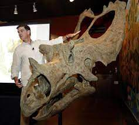

Our Mission
San Joaquin Valley Town Hall is a non-profit organization that is run by an all-volunteer board of directors. Our mission is to bring nationally and internationally renowned, thought-provoking speakers who inform educate, and entertain our audience! As one or our members told us:
"Each year i give a ticket package to each of our family members. I think of it as the gift of knowledge...and that is priceless."
Speaker of the Month
Fossil Threads in the Web of Life
February
Scott Sampson
What's 75 million years old and brand spanking new? A teenage utahceratops! Come to the Saroyan, armed with your best dinosaur roar, when Scott Sampson, Research Curator at the Utah Museum of Natural History, steps to the podium. Sampson's research has focused on the ecology and evolution of late Cretaceous dinosaurs and he has conducted fieldwork in a number of countries in Africa

Read more. Or meet us there!